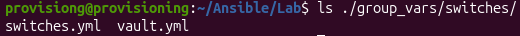
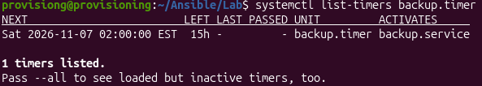

A pull-based backup of every Cisco IOS switch's running config, run from the management VM by Ansible every night and on demand after planned changes.
The management VM connects out to each switch over SSH and saves its running config into a dated file, so the switches never need to know the VM's password. The legacy SSH options that older IOS needs live in the Ansible client settings, so the VM's own SSH server stays locked down.
The design has three parts:
cisco.ios.ios_config with backup: true).An Ansible control node (the VM) that can reach each switch's management IP over SSH (TCP 22).
| Item | Requirement |
|---|---|
| Control node | Linux VM with Ansible core 2.14+ and Python 3 |
| Collections | cisco.ios and ansible.netcommon |
| Run-as user | The existing non-root login, provisiong |
| Project folder | ~/Ansible/Lab (already holds ansible.cfg, inventory.yml, show.yml, vlan.yml); backups go in ~/Backups |
| Switch access | SSH enabled and reachable from the VM's IP |
Install the collections and create the folder layout:
ansible-galaxy collection install cisco.ios ansible.netcommon cd ~/Ansible/Lab mkdir -p group_vars/switches ~/Backups chmod 700 ~/Backups
Backups contain password hashes and sometimes reversible passwords, so ~/Backups is readable only by the service user. Everything, including the nightly job, runs as provisiong, so no sudo or extra user is needed at run time.
Each switch gets one dedicated account, so the personal cisco login is never used by automation. This is pushed once by hand (or with a one-off Ansible run using a personal login):
conf t username ansible privilege 15 secret <STRONG-PASSWORD> ! end wr
privilege 15 lets the account run show running-config without an enable step. Where policy forbids that, a custom privilege level or TACACS+ command authorization limited to show commands does the same job.The switch password lives in an encrypted vault file, and a separate vault password file lets the scheduled job decrypt it unattended. Nothing sensitive appears on a command line or in shell history.
Create the vault password file, readable only by provisiong:
cd ~/Ansible/Lab openssl rand -base64 32 > .vault_pass chmod 600 .vault_pass
Create the encrypted variables file:
ansible-vault create group_vars/switches/vault.yml --vault-password-file .vault_pass
Its contents (encrypted on save):
vault_switch_password: "<STRONG-PASSWORD>"
Then point the existing ansible.cfg at the vault password file under [defaults], keeping the lines already there:
[defaults] vault_password_file = /home/provisiong/Ansible/Lab/.vault_pass
A copy of .vault_pass is kept in a password manager. Losing it means re-creating the vault; leaking it defeats the encryption, so it is never committed to git.
The existing inventory already has every switch in one switches group:
all:
children:
switches:
hosts:
CSW1:
ansible_host: 10.0.255.2
CSW2:
ansible_host: 10.0.255.3
DSW1:
ansible_host: 10.0.255.4
DSW2:
ansible_host: 10.0.255.5
ASW1:
ansible_host: 10.0.255.6
ASW2:
ansible_host: 10.0.255.7
Group variables apply to every playbook that targets the group, so the connection settings below also change how show.yml and vlan.yml log in. Those either move to the ansible account as well, or the backup uses a separate group (for example backup_switches) listing the same hosts.
The connection settings go in group_vars/switches/switches.yml, next to the vault file:
ansible_connection: ansible.netcommon.network_cli
ansible_network_os: cisco.ios.ios
ansible_user: ansible
ansible_password: "{{ vault_switch_password }}"
ansible_ssh_common_args: >-
-o KexAlgorithms=+diffie-hellman-group14-sha1
-o HostKeyAlgorithms=+ssh-rsa
-o PubkeyAcceptedAlgorithms=+ssh-rsa
-o Ciphers=+aes128-cbc,aes256-cbc
The legacy key exchange and cipher options are scoped to Ansible's SSH client, so the VM's own SSH server is never loosened. Both variable files are now in place:

One thing to watch: network_cli uses the paramiko library by default, which may not read ansible_ssh_common_args (that variable is meant for the OpenSSH client). If the first test fails with key exchange or cipher errors, that is the place to look.
~/Ansible/Lab/backup.yml, next to show.yml and vlan.yml. Each switch's config is written to a dated file under ~/Backups/<hostname>/.
---
- name: Back up Cisco IOS running configs
hosts: switches
gather_facts: false
vars:
backup_root: "/home/provisiong/Backups"
stamp: "{{ lookup('pipe', 'date +%Y-%m-%d_%H%M') }}"
tasks:
- name: Pull running-config
cisco.ios.ios_config:
backup: true
backup_options:
dir_path: "{{ backup_root }}/{{ inventory_hostname }}"
filename: "{{ inventory_hostname }}_{{ stamp }}.cfg"
no_log: true
no_log: true keeps the config, which can contain secrets, out of the run log. It is removed temporarily only when debugging.
One switch first, then all of them:
cd ~/Ansible/Lab ansible-playbook backup.yml --limit DSW1 ansible-playbook backup.yml
Confirm there is a non-empty file per switch:
ls -l ~/Backups/*/ | tail -n 20 grep -c '^hostname' ~/Backups/DSW1/*.cfg
Compare two runs to confirm only real changes show up:
diff ~/Backups/DSW1/<older>.cfg ~/Backups/DSW1/<newer>.cfg
A Building configuration... or timestamp line may differ between runs; everything else should match unless someone changed the switch.
A systemd timer is used instead of cron because it logs to the journal, catches up after a missed run and can trigger an alert on failure.
/etc/systemd/system/backup.service:
[Unit] Description=Back up Cisco switch configs with Ansible After=network-online.target Wants=network-online.target [Service] Type=oneshot User=provisiong WorkingDirectory=/home/provisiong/Ansible/Lab ExecStart=/usr/bin/ansible-playbook backup.yml
systemd does not expand ~, so every path is absolute. ExecStart must match what which ansible-playbook prints for provisiong (for a pip or pipx install that is often /home/provisiong/.local/bin/ansible-playbook).
/etc/systemd/system/backup.timer:
[Unit] Description=Nightly switch config backup [Timer] OnCalendar=*-*-* 02:00:00 Persistent=true [Install] WantedBy=timers.target
Enable it:
sudo systemctl daemon-reload sudo systemctl enable --now backup.timer systemctl list-timers backup.timer
The timer is active, with its first run scheduled for 02:00:

After a planned change, the same job runs on demand as the last step of the change checklist:
sudo systemctl start backup.service journalctl -u backup.service -n 50 --no-pager
Cron alternative. The equivalent entry in provisiong's crontab would be the line below. Use the timer or cron, never both.
0 2 * * * cd /home/provisiong/Ansible/Lab && /usr/bin/ansible-playbook backup.yml >> /home/provisiong/Ansible/Lab/netbackup.log 2>&1
A backup job that silently stops is the usual failure, so freshness gets checked weekly.
stale=0
for d in ~/Backups/*/; do
[ -n "$(find "$d" -name '*.cfg' -mtime -1)" ] || { echo "STALE: $d"; stale=1; }
done
[ "$stale" -eq 0 ] && echo "OK: all switches have a backup from the last 24h"ExecStartPost=/usr/bin/find /home/provisiong/Backups -name '*.cfg' -mtime +90 -delete
OnFailure= on the service pointing at a unit that sends an email or push notification, or an uptime check that the newest file is under 26 hours old.~/Backups/ copied to a second location (NAS, cloud bucket or private git repo) so losing the VM does not lose the configs, encrypted if it leaves the network.Copy the chosen backup to the switch's flash: (copy tftp: or scp), then run configure replace flash:<file> force on supported IOS, or paste it into conf t. Review it with diff first, and remember that backup files may contain masked or hashed secrets that need re-entering.